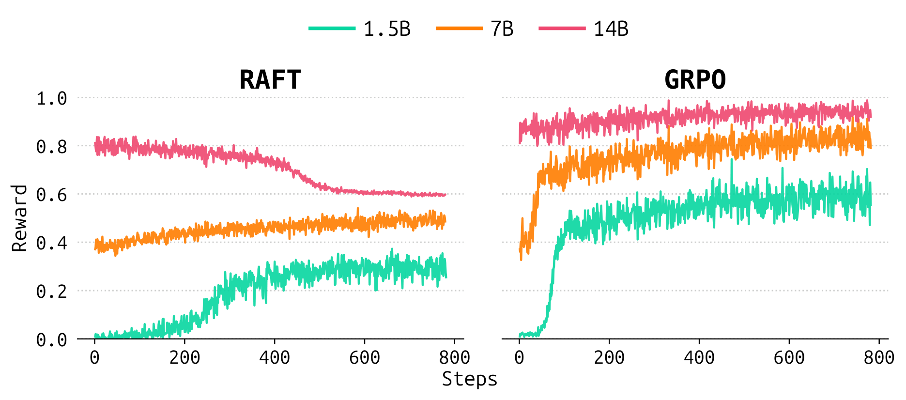
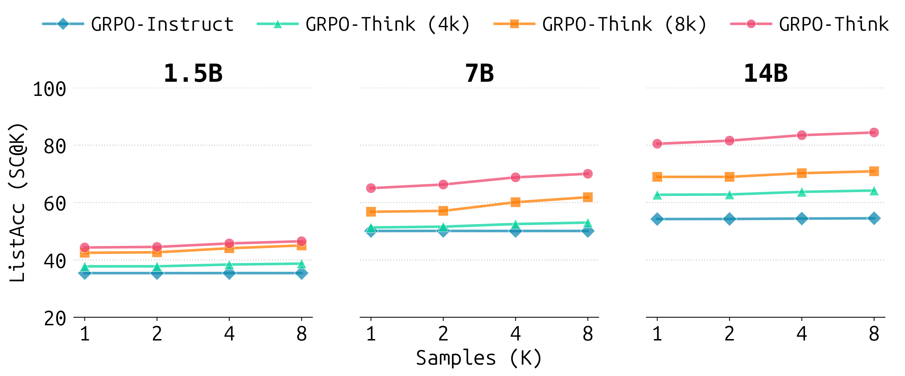

Multi-domain thinking verifiers trained via Reinforcement Learning with Verifiable Rewards (RLVR) are a cornerstone of modern post-training. However, their adoption in code generation has lagged behind that of execution feedback due to the prohibitive costs of the full RLVR pipeline. In this work, we ablate three primary choices along the performance–cost trade-off in RLVR: intermediate thinking traces, learning from negative samples, and on-policy training. We introduce Aletheia, a controlled, execution-grounded testbed to facilitate a decontaminated analysis of code verifier training recipes across disparate model sizes and covariate shifts across two common verifier application scenarios. Our analysis reveals that the optimal training recipe is scale-dependent: on-policy learning is the primary performance driver for small verifiers, whereas the thinking budget becomes the most vital factor at larger scales. Negative samples play a key role in stabilizing training at large sizes, have a constant impact on top-1 selection, but are increasingly important for ranking performance as size increases. Our Pareto optimality analysis demonstrates that eliminating on-policy training at larger model scales could yield a verifier that performs comparably to the full RLVR recipe. Furthermore, we find that eschewing thinking traces is a compute-efficient strategy at lower budgets, offering a strong trade-off between training cost and verifier accuracy. We validate our findings across a Best-of-N deployment setting and two external reward model benchmarks, demonstrating that our findings generalize beyond the controlled testbed. Ultimately, our work offers empirical guidance toward training cost-efficient code verifiers and takes a step toward their wider adoption in post-training pipelines for code generation.
Evaluating verifiers through their downstream use is noisy, expensive, and slow to iterate on: policy improvement conflates prior capability, reward signal, and the optimization process.
Aletheia sidesteps these confounds with an execution-grounded testbed that enforces a strict training–evaluation partition, isolating algorithmic robustness to out-of-distribution scenarios from simple data exposure.
Evaluation splits: Starting from competition-level programming problems, we construct four evaluation sets:
Aletheia-Heldout (in-distribution), Aletheia-Strong (solutions from stronger generators than those seen during training), Aletheia-Hard (incorrect candidates semantically very close to the correct one), and Aletheia-Adv (adversarially modified code snippets).
Metrics: Each verifier is evaluated on its ability to select the best candidate (top-1 selection, measured by list accuracy) and to reproduce the full ranked order (reranking, measured by Kendall's τ) over lists of 2–5 codes — proxies for Best-of-N selection and RL reward modeling, respectively.
Ablations: Using GRPO as the full recipe, we toggle off one component at a time — thinking traces (GRPO-Instruct), negative samples (RAFT), and on-policy training (DPO-Think) — across three verifier sizes (Qwen2.5 1.5B / 7B / 14B).
The contribution of thinking traces grows monotonically with model scale.
At 1.5–7B, the style of the intermediate trace makes little difference, but at 14B, reasoning-style traces are worth 8.4 Best-of-N points over short chain-of-thought. The training reasoning budget follows the same pattern: 1.5B saturates beyond 8k tokens, while 7–14B keep improving up to 16k. Thinking traces are also crucial for easy-to-hard generalization and are what enable verifiers to utilize additional inference compute via self-consistency.
On-policy learning is critical for small verifiers, but its importance diminishes with scale.
Off-policy training collapses below the random baseline at 1.5B due to degeneration and unparseable verdicts, but the offline–online gap narrows from 23.3 Best-of-N points at 1.5B to just 6.7 at 14B — without ever fully closing. Batch-online GRPO recovers neither the full recipe's performance nor a meaningful cost saving at 7–14B, and inference-time scaling narrows the gap but cannot close it.
Negative samples give a near-constant boost for selection, but matter increasingly for ranking.
GRPO-Think outperforms RAFT (which trains only on correct responses) at every scale with a near-constant gap of ≈12.6 Best-of-N points, while the ranking gap grows with scale — from 7.2 Kendall's τ points at 1.5B to 10.8 at 14B. Negatives also stabilize training: without them, reward curves flatline or even degrade at larger sizes.
Inference-time compute cannot substitute for any core component.
Self-consistency yields modest gains across the board, but even at K=8, ablated recipes fail to match the full GRPO-Think recipe at K=1.



DPO-Think-14B is the efficiency sweet spot.
At $7.09 per step, it achieves 14B-scale performance at 5.2× lower cost than GRPO-Think-14B and is the only 14B method on the Pareto frontier across all evaluations simultaneously.
Full GRPO is justified only for peak multi-condition performance.
The full recipe earns its cost by extending the frontier in-distribution, under stronger generators, and under adversarial perturbations — but it is dominated on easy-to-hard generalization (Aletheia-Hard), where thinking traces matter most and cheaper alternatives suffice.
GRPO-Instruct-7B anchors the low-budget end.
At $2.07 per step, it sits on the Pareto frontier in every panel and is a competitive baseline before scaling up, though its absolute performance trails DPO-Think-14B.
We validate all 21 studied verifiers in a realistic Best-of-N deployment: selecting among 16 solutions generated by Qwen2.5-Coder-7B-Instruct on 1,055 LiveCodeBench problems, and additionally compare against two external reward model benchmarks (RM-Bench and Themis-CodeRewardBench, CRB). Aletheia's metrics are the best proxies for downstream verifier ranking at every scale, with the Kendall's τ metric correctly identifying 100% of statistically distinguishable verifier comparisons (paired McNemar test) — ahead of both external benchmarks.
| Proxy | 1.5B τ-b (ρ) | 7B τ-b (ρ) | 14B τ-b (ρ) | α = 0.05 (n=37) | α = 0.01 (n=25) |
|---|---|---|---|---|---|
| +0.52 (+0.68) | +0.90 (+0.96) | +0.88 (+0.95) | 94.6% | 100% | |
| +0.81 (+0.89) | +0.62 (+0.75) | +0.98 (+0.99) | 100% | 100% | |
 CRB (Overall) CRB (Overall) |
+0.14 (+0.36) | +0.43 (+0.71) | +0.59 (+0.72) | 78.4% | 80% |
| CRB (Functional Correctness) |
-0.14 (-0.21) | +0.24 (+0.39) | +0.98 (+0.99) | 70.3% | 68% |
 RM-Bench (Overall) RM-Bench (Overall) |
+0.43 (+0.64) | +0.71 (+0.86) | +0.98 (+0.99) | 91.9% | 96% |
| RM-Bench (Code) |
+0.39 (+0.45) | +0.62 (+0.75) | +0.88 (+0.95) | 89.2% | 96% |
We further check whether each individual finding holds across the downstream BoN rankings and the external benchmarks. Our scale-dependent findings are fully supported by BoN and RM-Bench, confirming that they generalize beyond the controlled testbed; only the reasoning-budget finding is unsupported by CRB, likely because its construction spans auxiliary code tasks our verifiers were not trained on.
| Claim | BoN | CRB |
RM-Bench |
|
|---|---|---|---|---|
| F1 | The importance of thinking traces grows with scale | ✔ | ✔ | ✔ |
| F2 | The importance of on-policy learning decreases with scale | ✔ | ✔ | ✔ |
| F3 | Scaling reasoning budget beyond 8k benefits larger models more | ✔ | ✘ | ✔ |
| F4 | Batch-online training has no significant gain over offline at 7–14B | ✔ | ✔ | ✔ |
@article{venkatkrishna2026aletheia,
title = {Aletheia: What Makes {RLVR} For Code Verifiers Tick?},
author = {Vatsal Venkatkrishna and Indraneil Paul and Iryna Gurevych},
journal = {Transactions on Machine Learning Research},
issn = {2835-8856},
year = {2026},
url = {https://openreview.net/forum?id=3rVrBGp0mr}
}